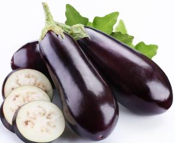

茄子
[别名] [食量建议] [适宜人群] [禁忌人群]
湿气重
湿气重
湿气重
茄子的百科知识
茄子的介绍
茄子，又称“茄”，别称“落苏”，是为数不多的紫色蔬菜之一，也是餐桌上十分常见的家常蔬菜。江浙皖部分地区人称为落苏，两广人称为矮瓜，是茄科茄属一年生草本植物，热带为多年生。其结出的果实可食用，颜色多为紫色或紫黑色，也有淡绿色或白色品种，形状上也有圆形、椭圆、梨形等各种。
茄子的食用效果
(1).中医认为，茄子性味甘寒，入脾、胃、大肠经，有活血化淤，清热消肿宽肠之效，适用于肠风下血，热毒疮痈，皮肤溃疡等。
(2).茄子含黄铜类化合物，具抗氧化功能，可防止细胞癌变，同时也能降低血液中胆固醇含量，预防动脉硬化，可调节血压，保护心脏。紫皮茄子对高血压、咯血、皮肤紫斑病患者益处很大。
(3).茄皮中含有色素茄色甙、紫苏甙等，现代医学研究证明上述物质具有一定的生物活性，对人体有很好的保健作用。